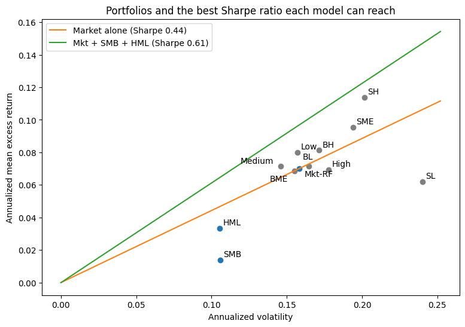

HW 1 Guide E: Testing the CAPM and the Three-Factor Model#
Two readings tell the theory story: From Mean-Variance to the CAPM and From the CAPM to Multifactor Models. The CAPM says the market is the tangency portfolio from HW 0. Multifactor models, such as Fama and French (1993), say the tangency portfolio is a mix of the market, SMB, and HML. This notebook puts both claims to the data, using the portfolios the HW 1 pipeline builds:
6 size and book-to-market portfolios (
FF_1993_vwret.parquet), the 2x3 sort from Fama and French (1993).3 investment portfolios (
univ_3_inv_vwret.parquet), sorted on asset growth into conservative (Low), Medium, and aggressive (High).
Each claim can be checked two equivalent ways:
As a portfolio problem. Is the market (or the mix of Mkt-RF, SMB, and HML) the tangency portfolio? If so, no other portfolio can raise its Sharpe ratio.
As a regression. Regress each portfolio’s excess return on the factors. If the model holds, the intercept, alpha, is zero:
The CAPM is this regression with \(s_p = h_p = 0\). A nonzero alpha means that the factors’ tangency portfolio can be improved on by adding portfolio \(p\) (Gibbons, Ross, and Shanken 1989), so the two views always agree.
The calculations are in src/calc_CAPM_and_FF3.py, and the doit task
calc_CAPM_and_FF3 saves the tables this guide discusses. In HW 1 this part
has no blanks to fill and no tests: it is here to show what the portfolios
you built in Part D are for.
import calc_CAPM_and_FF3
import figures
from settings import config
DATA_DIR = config("DATA_DIR")
OUTPUT_DIR = config("OUTPUT_DIR")
Load the data#
The portfolio returns come from the HW 1 pipeline. The market factor, SMB,
HML, and the risk-free rate are Ken French’s official series
(FF_FACTORS.parquet). Excess returns subtract the risk-free rate.
portfolios, factors, excess_returns = calc_CAPM_and_FF3.load_test_assets(
data_dir=DATA_DIR
)
tables = calc_CAPM_and_FF3.load_tables(output_dir=OUTPUT_DIR)
print(
f"{len(excess_returns)} months, {excess_returns.index.min():%Y-%m} to {excess_returns.index.max():%Y-%m}"
)
excess_returns.head()
690 months, 1967-07 to 2024-12
| SL | SME | SH | BL | BME | BH | Low | Medium | High | |
|---|---|---|---|---|---|---|---|---|---|
| jdate | |||||||||
| 1967-07-31 | 0.059197 | 0.066041 | 0.096480 | 0.046555 | 0.028994 | 0.069242 | 0.055290 | 0.030918 | 0.057613 |
| 1967-08-31 | -0.005925 | -0.008742 | 0.001396 | -0.011248 | -0.015236 | 0.009736 | -0.021376 | -0.010249 | -0.008022 |
| 1967-09-30 | 0.054902 | 0.036981 | 0.046046 | 0.036723 | 0.019407 | 0.017920 | 0.014593 | 0.035391 | 0.020449 |
| 1967-10-31 | -0.020694 | -0.029065 | -0.039934 | -0.016809 | -0.044634 | -0.052199 | -0.040570 | -0.031605 | -0.023826 |
| 1967-11-30 | 0.010628 | 0.005021 | -0.015107 | 0.007192 | 0.000413 | -0.005694 | -0.008637 | 0.007597 | 0.002894 |
From HW 0 to the CAPM: is the market the tangency portfolio?#
HW 0 derived the tangency portfolio, the risky portfolio with the highest Sharpe ratio. With excess returns, its weights are proportional to \(\Sigma^{-1}\mu\), rescaled to sum to one. The CAPM says that the market alone is that portfolio. The three-factor model says that the tangency portfolio is a mix of Mkt-RF, SMB, and HML.
SMB and HML are long-short portfolios, so a “weight” here is the size of the position in each factor per dollar in the market.
The calculation is short enough to show in full:
def tangency(excess):
w = np.linalg.solve(excess.cov(), excess.mean())
w = pd.Series(w / w.sum(), index=excess.columns)
portfolio = excess @ w
sharpe = portfolio.mean() / portfolio.std() * np.sqrt(12)
return w, sharpe
tables["tangency"].round(2)
| Sharpe ratio (annual) | Mkt-RF | SMB | HML | |
|---|---|---|---|---|
| Market alone | 0.44 | 1.00 | NaN | NaN |
| Mkt + SMB + HML | 0.61 | 0.42 | 0.05 | 0.53 |
The mix of the three factors reaches a noticeably higher Sharpe ratio than the market alone. In mean-variance terms, that is the whole case against the CAPM: the market is not on the efficient frontier, because tilting toward small and value stocks improves it. The chart shows the same thing. Each line starts at zero excess return (the risk-free asset) and its slope is a Sharpe ratio, as in HW 0.

The CAPM regressions#
Now the regression view, one portfolio at a time. For each portfolio we report the annualized alpha, its t-statistic, the market beta, and the R-squared. If the CAPM holds, every alpha is zero; a |t| above about 2 means the data reject that for that portfolio.
tables["capm"].round(3)
| Alpha (annual) | t(Alpha) | Beta Mkt-RF | R-squared | |
|---|---|---|---|---|
| SL | -0.031 | -1.986 | 1.325 | 0.764 |
| SME | 0.020 | 1.619 | 1.079 | 0.776 |
| SH | 0.039 | 2.662 | 1.062 | 0.696 |
| BL | 0.001 | 0.162 | 1.010 | 0.942 |
| BME | 0.004 | 0.581 | 0.916 | 0.874 |
| BH | 0.016 | 1.382 | 0.928 | 0.736 |
| Low | 0.014 | 2.081 | 0.941 | 0.899 |
| Medium | 0.009 | 1.837 | 0.892 | 0.939 |
| High | -0.007 | -1.416 | 1.095 | 0.950 |
Market betas range from about 0.9 to 1.3, and the market explains most of the variance of every portfolio, but the alphas are not all zero. Small value stocks (SH) earn much more than their beta predicts and small growth stocks (SL) earn less. Among the investment portfolios, conservative firms (Low) earn more than their beta predicts. These are the patterns Fama and French set out to explain.
Adding SMB and HML#
The same regressions with SMB and HML added:
tables["ff3"].round(3)
| Alpha (annual) | t(Alpha) | Beta Mkt-RF | Beta SMB | Beta HML | R-squared | |
|---|---|---|---|---|---|---|
| SL | -0.021 | -4.165 | 1.091 | 1.043 | -0.228 | 0.975 |
| SME | 0.004 | 0.938 | 0.974 | 0.808 | 0.366 | 0.977 |
| SH | 0.008 | 2.591 | 0.998 | 0.855 | 0.719 | 0.987 |
| BL | 0.013 | 4.013 | 0.999 | -0.150 | -0.281 | 0.978 |
| BME | -0.010 | -1.819 | 0.984 | -0.111 | 0.329 | 0.930 |
| BH | -0.017 | -3.096 | 1.044 | -0.043 | 0.757 | 0.946 |
| Low | 0.006 | 0.916 | 0.962 | 0.032 | 0.189 | 0.914 |
| Medium | 0.001 | 0.385 | 0.944 | -0.144 | 0.173 | 0.966 |
| High | 0.000 | 0.073 | 1.066 | 0.013 | -0.180 | 0.962 |
Reading the factor loadings#
The loadings on SMB and HML describe what each portfolio looks like:
SMB loading above zero: the portfolio behaves like small stocks. Below zero, like large stocks.
HML loading above zero: the portfolio behaves like value stocks (high book-to-market). Below zero, like growth stocks (low book-to-market).
The loadings line up with how the portfolios were sorted. The three small portfolios load heavily on SMB, the two high book-to-market portfolios load positively on HML, and the two low book-to-market portfolios load negatively. The investment portfolios have almost no size tilt, but the conservative portfolio leans toward value and the aggressive one toward growth.
What the three factors do and do not fix#
Put the two models side by side.
tables["alpha_comparison"].round(3)
| CAPM alpha | CAPM t | FF3 alpha | FF3 t | CAPM R2 | FF3 R2 | |
|---|---|---|---|---|---|---|
| SL | -0.031 | -1.986 | -0.021 | -4.165 | 0.764 | 0.975 |
| SME | 0.020 | 1.619 | 0.004 | 0.938 | 0.776 | 0.977 |
| SH | 0.039 | 2.662 | 0.008 | 2.591 | 0.696 | 0.987 |
| BL | 0.001 | 0.162 | 0.013 | 4.013 | 0.942 | 0.978 |
| BME | 0.004 | 0.581 | -0.010 | -1.819 | 0.874 | 0.930 |
| BH | 0.016 | 1.382 | -0.017 | -3.096 | 0.736 | 0.946 |
| Low | 0.014 | 2.081 | 0.006 | 0.916 | 0.899 | 0.914 |
| Medium | 0.009 | 1.837 | 0.001 | 0.385 | 0.939 | 0.966 |
| High | -0.007 | -1.416 | 0.000 | 0.073 | 0.950 | 0.962 |
tables["model_summary"].round(3)
| CAPM | FF3 | |
|---|---|---|
| Mean |alpha| (annual) | 0.016 | 0.009 |
| Mean R-squared | 0.842 | 0.959 |
| Portfolios with |t| > 1.96 | 3.000 | 4.000 |
Adding SMB and HML does what the theory hopes in two ways. R-squared rises for every portfolio, and the typical alpha shrinks, most dramatically for small value stocks. It does not make the model pass. Because the three factors explain almost all of the variance, the remaining alphas are measured very precisely, and several are still clearly nonzero. More portfolios have a significant alpha under FF3 than under the CAPM:
Small growth (SL) still earns too little. This is the best-known failure of the three-factor model.
Big value and big growth (BH, BL) get alphas of opposite sign. HML averages the value premium across small and big stocks, but the premium is much larger among small stocks, so a single HML loading overstates it for big stocks.
In mean-variance language, the tangency portfolio of Mkt, SMB, and HML is much better than the market alone, but it is still not the true tangency portfolio of these nine portfolios.
The investment portfolios#
Under the CAPM, conservative firms (Low) earn a positive alpha and aggressive firms (High) a negative one. The three-factor model absorbs most of that spread through HML: conservative firms tend to be value firms, and aggressive firms tend to be growth firms.
tables["investment_spread"].round(4)
| CAPM | FF3 | |
|---|---|---|
| Alpha, Low minus High investment (annual) | 0.0213 | 0.0053 |
If a significant Low-minus-High alpha spread had survived the three-factor adjustment, that would suggest investment is a distinct priced factor. With only three coarse portfolios, HML absorbs most of it here. Finer sorts, such as the 25 size-investment portfolios, do leave investment and profitability alphas that the three factors miss. That is why Fama and French (2015) add CMA (conservative minus aggressive investment) and RMW (robust minus weak profitability) in their five-factor model. In that model, HML becomes largely redundant, which matches what the investment portfolios show above.
Summary#
The market alone is not the tangency portfolio. Mixing in SMB and HML raises the maximum Sharpe ratio, which is the same fact as the CAPM alphas seen through a regression.
The three-factor model raises R-squared and shrinks alphas, but the remaining alphas (small growth, and big value versus big growth) are precise enough to reject it.
The investment effect in three portfolios is mostly an HML tilt. Finer sorts are what motivated the five-factor model.
References#
Fama, Eugene F., and Kenneth R. French. “Common Risk Factors in the Returns on Stocks and Bonds.” Journal of Financial Economics 33, no. 1 (1993): 3-56.
Fama, Eugene F., and Kenneth R. French. “A Five-Factor Asset Pricing Model.” Journal of Financial Economics 116, no. 1 (2015): 1-22.
Gibbons, Michael R., Stephen A. Ross, and Jay Shanken. “A Test of the Efficiency of a Given Portfolio.” Econometrica 57, no. 5 (1989): 1121-1152.